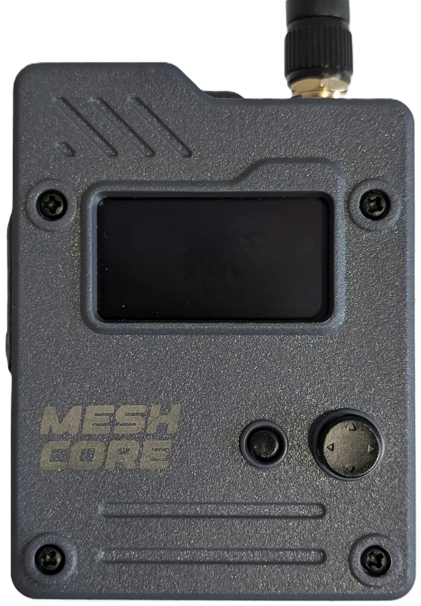

This browser has no Web Bluetooth. Use Chrome on Android (or Chrome/Edge on a computer).

Tap around the joystick to push it that way (or drag from its middle), tap the middle to press. Tap the screen to enlarge it. Left from the list opens Settings, right opens Diagnostics.
The tracker keeps listening while a file downloads.